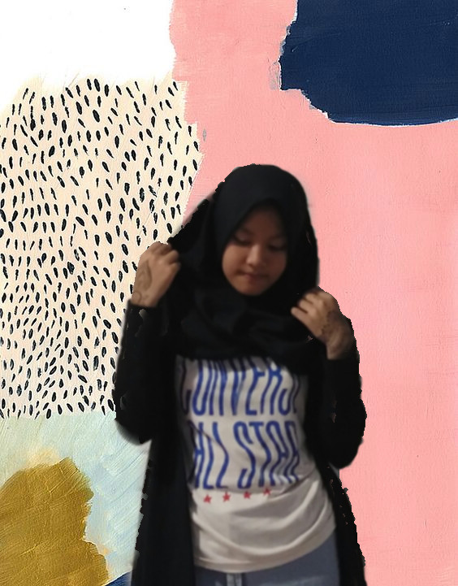

ABOUT ME
When i was born in 2002, my mom gave me a name. So i can call myself by it. I like my name because what it's mean. My full name is Salma Billah Attaqy. But usually my friends call me Salma. God gave me two little sisters, their name heard like a twins, but they aren't. Their name are Ataka Shafia and Ataya Nura.
I was study in Junior High School 1 Kuningan, and my Elementary school is Elementary School 1 Kuningan , but now, it's name change to be Elementary School 17 Kuningan. I feel so sad because i became the last generation of Elementary School 1 Kuningan's Student. Here, you can read a little about my self in BIODATA and you can see my drawing and my self picture in Gallery. Thank you for coming to my site!
I have so many hobbies, one of them is Drawing.